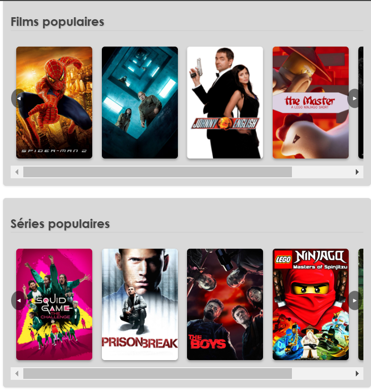
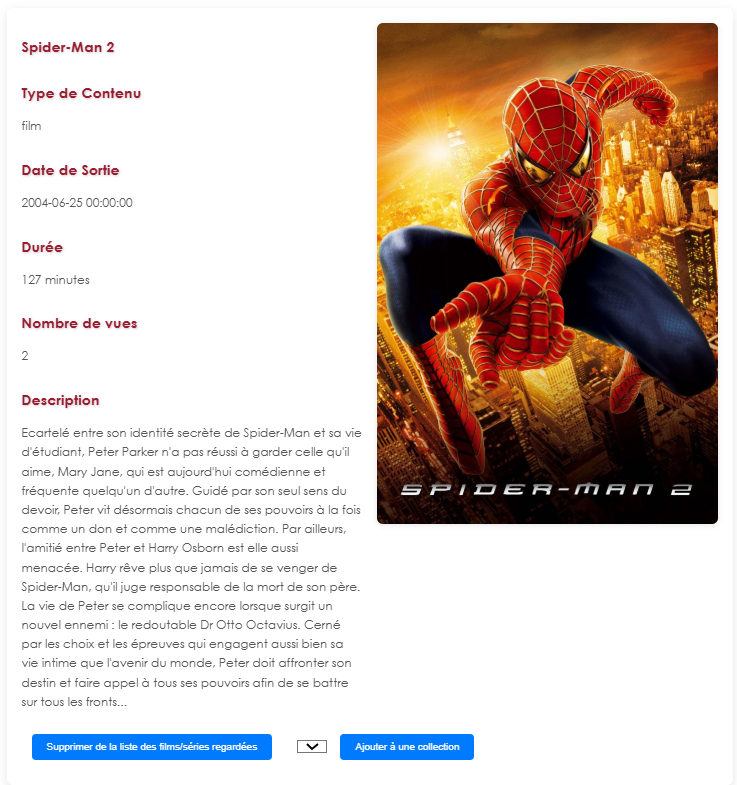

Introduction au projet
Dans le cadre de ce projet, l’objectif est de concevoir et de développer une application répondant à un besoin client initialement imprécis. En équipe, nous suivons une démarche de développement itérative ou incrémentale afin de clarifier et formaliser les exigences, puis de proposer une solution logicielle de qualité.

Objectifs et problématique professionnelle
La problématique professionnelle est de créer, au sein d’une équipe, une application itérative et incrémentale répondant à un besoin client initialement imprécis : offrir aux utilisateurs un moyen de référencer leurs contenus (films, séries, livres), de partager leurs expériences et de construire une communauté.
Partant de ce besoin, notre objectif est de clarifier et formaliser les fonctionnalités essentielles : catalogue de contenus, gestion de comptes utilisateurs, historique de visionnage, système d’avis et de notes, ainsi qu’un volet communautaire (forums, interactions, suivi entre utilisateurs).
Le projet doit répondre à des critères de qualité (ergonomie, performances, maintenabilité) et s’appuie sur un socle technique maîtrisé (HTML, CSS, JavaScript, PHP, SQL). Nous utilisons également des outils de gestion de projet (Git, Discord, Notion) pour assurer un suivi efficace et un développement collaboratif.
Séries et films populaires

Page détail et ajout des contenus

Descriptif générique
Cette SAE permet, après avoir collecté et formalisé les besoins d'un client, de développer une application de qualité répondant à ces besoins. L'application devra s'appuyer sur une base de données et sur un serveur. La solution retenue doit respecter des critères de performance, de maintenabilité et d'ergonomie afin de proposer une expérience optimale aux utilisateurs.
Au fil du projet, les membres de l’équipe assurent un suivi régulier du cahier des charges et des objectifs, tout en mettant en pratique des méthodes de gestion de projet pour assurer le respect des délais et la cohérence globale de l’application.
Téléchargement du projet
Pour consulter l’intégralité du code source et tester l’application, vous pouvez télécharger le projet au format ZIP.
Projet en cours de développement